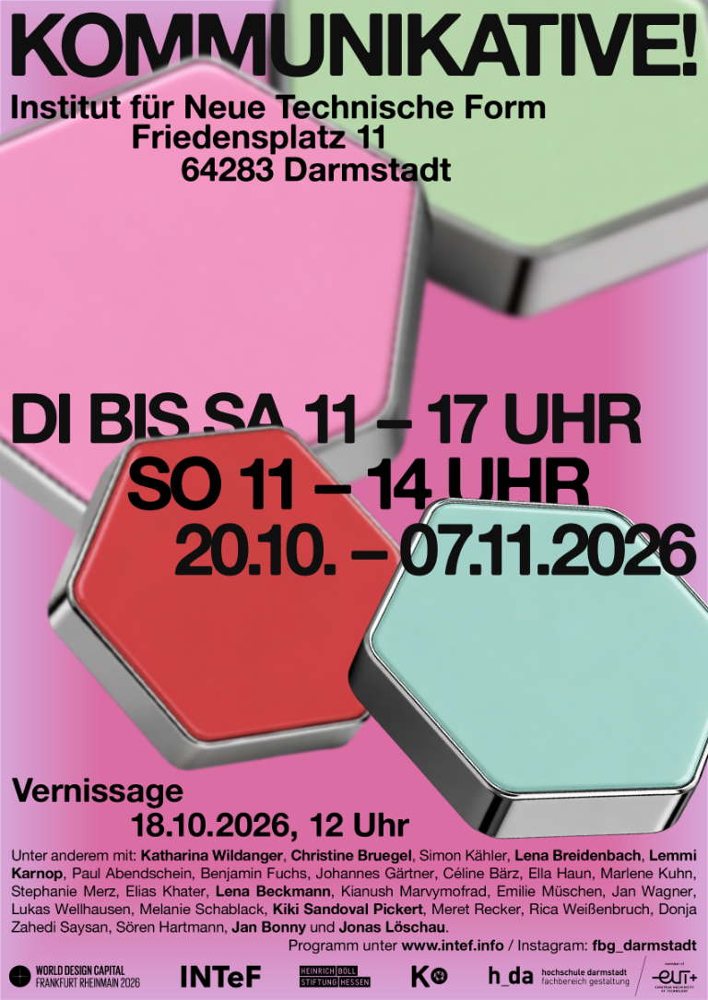
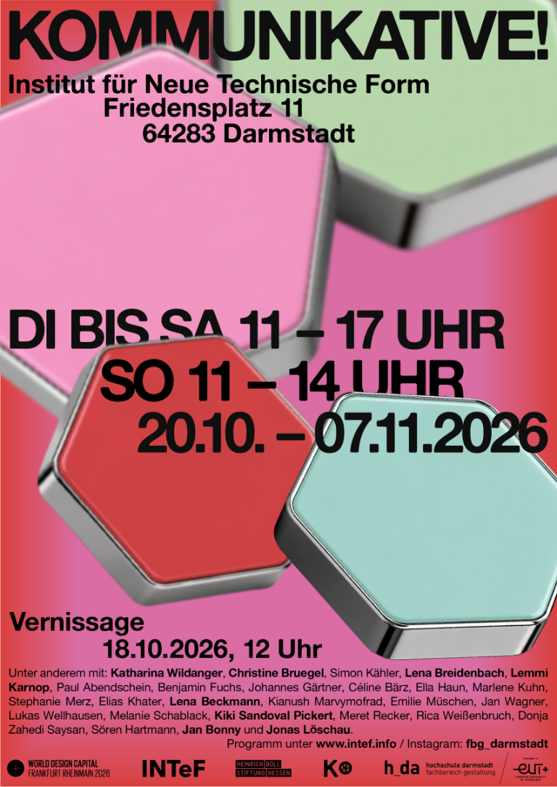
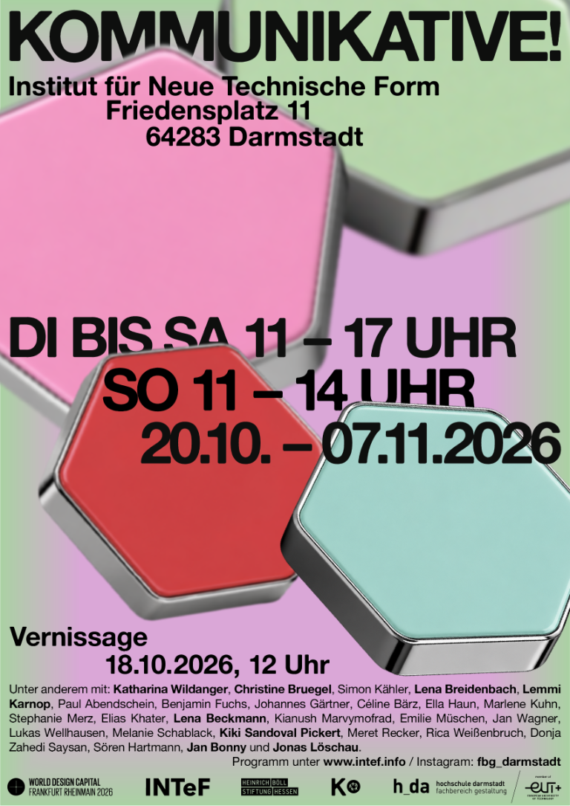
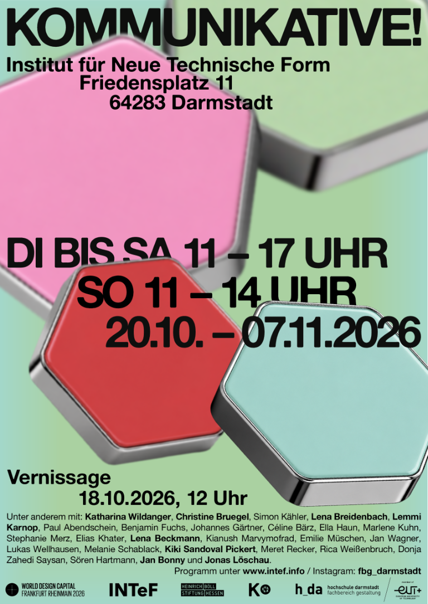

Prof. Tobias Katz
Kurator





Das Projekt KOMMUNIKATIVE! versammelt Abschluss- und Studienarbeiten aus Darmstadt, Würzburg und Düsseldorf. Die Ausstellung fragt, wie Gestaltung Demokratiebildung, gesellschaftlichen Diskurs und soziale Gerechtigkeit mitprägen kann. Kuratiert von Prof. Tobias Katz, Prof. Dr. Gesa Foken und Dr. Christian Driesen.
Konzept & Ausstellung
Vom handlungsorientierten Bildungskonzept für Schulen über Perspektivwürfel bis zum durchsichtigen Grundgesetz im Alltag.
Urbane Teilhabe in Würzburg, der umgedeutete Reichstagsgraben, modulare Sprachrohre und Dritte Orte der Vergemeinschaftung.
Das Formular als Interface zwischen Verwaltung und Mensch, tragbare Biografien in Zeiten erodierender Demokratien und Leseprotokolle.
Gestaltung als gesellschaftliche Praxis: politisch, gemeinschaftlich und interventionistisch.
Das Verständnis von Design ist stark durch Industrialisierung, Sozialgeschichte und politische Entwicklungen geprägt und hat somit dezidiert gesellschaftlichen Charakter. In dem Wissen um die Möglichkeiten, an Demokratiebildung und sozialer Gerechtigkeit mitzuwirken, begreift sich engagiertes Design als Fürsprecher emanzipatorischer Praktiken. Gerade junge Designer:innen orientieren sich an einem Design, das ausdrücklich die Gemeinschaft im Blick hat, und nutzen die gestaltungsbasierten Mittel, demokratische Gesellschaft weiterzuentwickeln.
Die KOMMUNIKATIVE! sucht nach Handlungsoptionen kritischer Sozialpraxis und -theorie, indem sie von interventionistischen Ansätzen konkreter Gestaltung ausgeht.
Diese zielen auf eine Öffentlichkeit ab, in der nicht nur das Design selbst, sondern ebenso eine demokratisch verfasste Gesellschaft ihren utopischen Kern verwirklicht. Hierfür werden Gestaltungsmöglichkeiten aus den Entwurfsdisziplinen, den Gesellschaftswissenschaften sowie der kritischen Bildungspraxis zusammengedacht und ineinandergefügt.
Die Ausstellung gastiert vom 20. Oktober bis 7. November 2026 im Institut für Neue Technische Form (INTeF) in Darmstadt. Vorträge, Diskussionen und partizipative Workshops öffnen das Thema für die Stadtgesellschaft.
Hochschule Darmstadt / Fachbereich Gestaltung
Technische Hochschule Würzburg-Schweinfurt / Fakultät Gestaltung
Hochschule Düsseldorf / Peter Behrens School of Arts / FB Architektur
In Kooperation mit der Heinrich-Böll-Stiftung Hessen